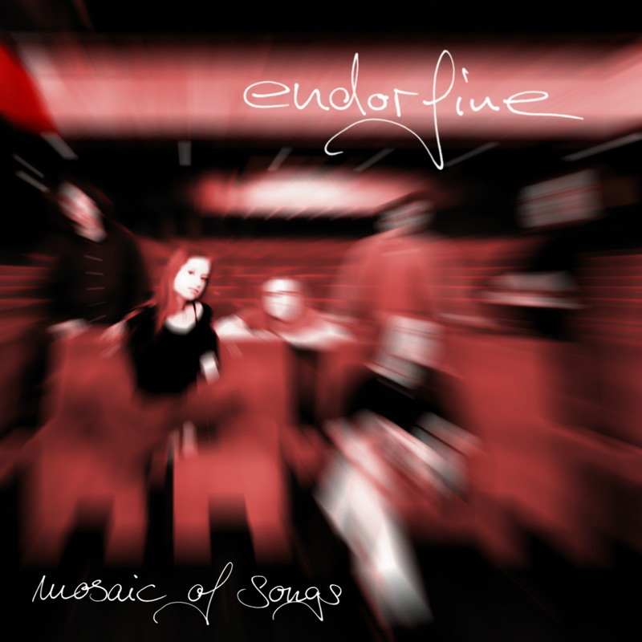

MusikMusic
Aus einem prall gefüllten Repertoire eigener Kompositionen destillierte die Band 2002 eine kleine, feine Studio-Auswahl — vier Songs, die endorfine auf den Punkt bringen. In 2002 the band distilled a rich repertoire of original compositions into a small, fine studio selection — four songs that capture the essence of endorfine.
Wähl deinen Streaming-Dienst — die Songtitel führen dich direkt dorthin. Pick your streaming service — the track titles take you straight there.

„Herbstlich-warme Klangfarben — eine gelungene Mischung aus Melancholie und Lebensfreude." “Autumnally warm timbres — a perfect blend of melancholy and joie de vivre.” Ludwigsburger Kreiszeitung „Ihre melancholische Symbiose aus Rock und Pop hinterließ bei so manchem Zuhörer eine Gänsehaut." “Their melancholic symbiosis of rock and pop gave many a listener goosebumps.” Ludwigsburger Kreiszeitung „Ihr melancholischer Poprock bietet eine willkommene Abwechslung und füllt fast schon eine eigene Nische." “Their melancholic pop rock offers a welcome change and almost fills a niche of its own.” Ludwigsburger Kreiszeitung „… und Endorfine brachten mit gefühlvollen Balladen und melodischen Rocksongs Gänsehaut-Feeling in den Garten." “… and with soulful ballads and melodic rock songs, Endorfine brought that goosebump feeling to the garden.” Schlagseite
GeschichteThe Story
Gegründet wurde endorfine im Januar 1999 von Gitarrist Andy und Schlagzeuger Stefan. Kurze Zeit später stieß Sängerin Silvia dazu, und aus ersten Song-Ideen wurden eigene Kompositionen. Mit Bassistin Anke spielte sich die Band im April 2000 beim ersten Auftritt im Ludwigsburger Waldhaus warm. endorfine was founded in January 1999 by guitarist Andy and drummer Stefan. Singer Silvia joined shortly after, and the first song ideas grew into original compositions. With bassist Anke on board, the band played its first show at the Waldhaus in Ludwigsburg in April 2000.
Im Sommer 2000 komplettierten Gitarrist Stephan und Keyboarder Alper das Sextett. Die Songs wurden aufwendiger, die Auftritte größer — vom Scala Ludwigsburg über das LKA Stuttgart bis zur eigenen CD-Release-Party. 2002 erschien die EP Mosaic of Songs, die heute auf allen großen Streaming-Plattformen zu hören ist. In the summer of 2000, guitarist Stephan and keyboardist Alper completed the six-piece. The songs grew more elaborate, the shows bigger — from Scala Ludwigsburg to the LKA in Stuttgart to the band's own CD release party. In 2002 the EP Mosaic of Songs was released; today it can be heard on all major streaming platforms.
-
01/1999
Gründung durch Andy (Gitarre) und Stefan (Drums) — Silvia übernimmt den Gesang. Founded by Andy (guitar) and Stefan (drums) — Silvia takes over vocals.
-
Ende 1999Late 1999
Anke übernimmt den Bass — die Besetzung für die ersten Auftritte steht. Anke takes over bass duties — the line-up for the first shows is complete.
-
04/2000
Erster Auftritt im Waldhaus, Ludwigsburg. First show at the Waldhaus, Ludwigsburg.
-
2000
Stephan (Gitarre) und Alper (Keyboard) machen die Band zum Sextett. Stephan (guitar) and Alper (keyboard) turn the band into a six-piece.
-
2001
Konzerte in der ganzen Region, erste Pressestimmen — „feinster Poprock". Concerts across the region, first press coverage — “finest pop rock”.
-
2002
Die EP Mosaic of Songs erscheint — Release-Party im Waldhaus, Auftritte u. a. im LKA Stuttgart. The EP Mosaic of Songs is released — release party at the Waldhaus, shows including the LKA Stuttgart.
-
HeuteToday
Mosaic of Songs ist auf Apple Music, Spotify und allen großen Plattformen verfügbar. Mosaic of Songs is available on Apple Music, Spotify and all major platforms.
Alle Konzerte 2000–2002 All concerts 2000–2002
| 26.07.2002 | Die Halle, Reichenbach | Konzert mit weiteren Bands | Concert with other bands |
| 15.07.2002 | Waldhaus, Ludwigsburg | CD-Release-Party mit Tosh | CD release party with Tosh |
| 14.07.2002 | Waldhaus, Ludwigsburg | Sunday Morning Festival | Sunday Morning Festival |
| 13.07.2002 | Kreuzkirche, Ludwigsburg | Rock an der Kreuzkirche | Rock at the Kreuzkirche |
| 12.07.2002 | LKA, Stuttgart | Youngsterball mit drei weiteren Bands | Youngsterball with three other bands |
| 29.06.2002 | Phönix Pub, Lauffen | Konzert mit Tosh | Concert with Tosh |
| 24.05.2002 | Jugendforum, Möglingen | Konzert mit Tosh | Concert with Tosh |
| 09.05.2002 | Michaelsberg, Cleebronn | 20. BDKJ-Musikfestival | 20th BDKJ music festival |
| 08.03.2002 | Stadthalle, Asperg | Jugend Live Event | Youth live event |
| 14.12.2001 | Scala, Ludwigsburg | Jugendfestival | Youth festival |
| 21.07.2001 | Jugendcafé BarRock, Ludwigsburg | Hügelfestival mit neun weiteren Bands | Hügelfestival with nine other bands |
| 21.07.2001 | Goethe-Gymnasium, Ludwigsburg | Projekttage | School project days |
| 30.06.2001 | Jugendhaus im Buch, Bietigheim | Privatparty | Private party |
| 23.02.2001 | Jugendforum, Möglingen | Mit Ungemein und Frame 5 | With Ungemein and Frame 5 |
| 26.01.2001 | Jugendcafé BarRock, Ludwigsburg | Mit Ungemein, New Average und Stardog | With Ungemein, New Average and Stardog |
| 10.04.2000 | Waldhaus, Ludwigsburg | Erster Auftritt | First show |
PressePress
Stimmen aus der Regionalpresse, 2001–2002. Voices from the German regional press, 2001–2002 — translated from the German originals.
Eine der wenigen Musikgruppen, die sich nicht dem New Metal oder Punk Rock verschrieben haben. Ihr melancholischer Poprock bietet eine willkommene Abwechslung und füllt fast schon eine eigene Nische. One of the few bands not devoted to nu metal or punk rock. Their melancholic pop rock offers a welcome change and almost fills a niche of its own.
Ludwigsburger Kreiszeitung · 16.07.2002
Mit herbstlich warmen Klangfarben — einer gelungenen Mischung aus Melancholie und Lebensfreude — konnte Endorfine das Publikum für sich gewinnen. Eine tolle Darbietung. With autumnally warm timbres — a perfect blend of melancholy and joie de vivre — Endorfine won the audience over. A great performance.
Asperger Nachrichten · 14.03.2002
Feinsten Poprock gab es von Endorfine auf die Ohren. Das Sextett aus Ludwigsburg bot einige wunderbare Balladen, bei denen die ungewöhnlich klare Stimme von Sängerin Silvia B. herausragte. Finest pop rock from Endorfine. The six-piece from Ludwigsburg delivered some wonderful ballads, crowned by the remarkably clear voice of singer Silvia B.
Schlagseite · 31.01.2001
Ihre melancholische Symbiose aus Rock und Pop hinterließ bei so manchem Zuhörer eine Gänsehaut. Their melancholic symbiosis of rock and pop gave many a listener goosebumps.
Ludwigsburger Kreiszeitung · 31.01.2001
… und Endorfine brachten mit gefühlvollen Balladen und melodischen Rocksongs wie ‚When Sense Meets Sensibility' Gänsehaut-Feeling in den Garten. … and with soulful ballads and melodic rock songs like ‘When Sense Meets Sensibility’, Endorfine brought that goosebump feeling to the garden.
Schlagseite · 24.07.2001
Besonders bemerkenswert ist die Arbeit von Keyboarder Alper A.: Sein Instrument übernimmt oft die Melodieführung und verpasst der Musik des Sextetts eine sehr eigene Note. Particularly remarkable is the work of keyboardist Alper A.: his instrument often takes the melodic lead, giving the six-piece's music a very distinctive character.
Ludwigsburger Kreiszeitung · 16.07.2002
KontaktContact
Fragen, Presse, Erinnerungen an ein Konzert? Schreib uns. Questions, press, memories of a show? Drop us a line.
info@endorfine.music